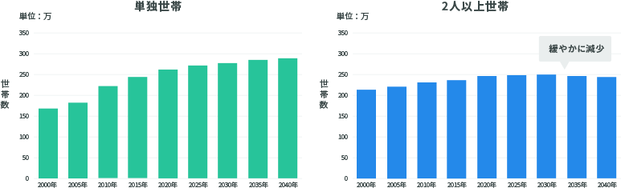
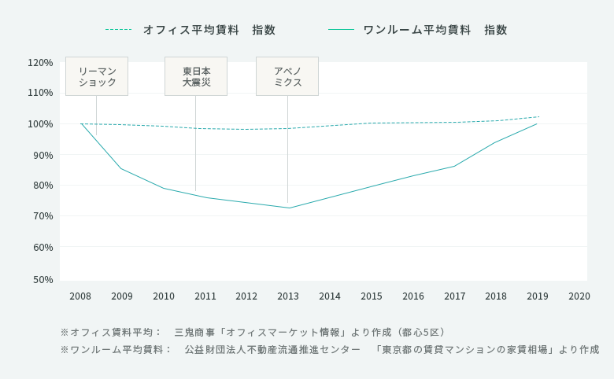
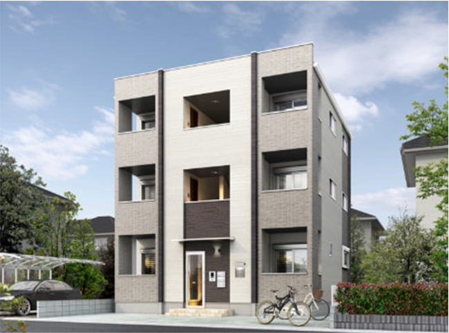
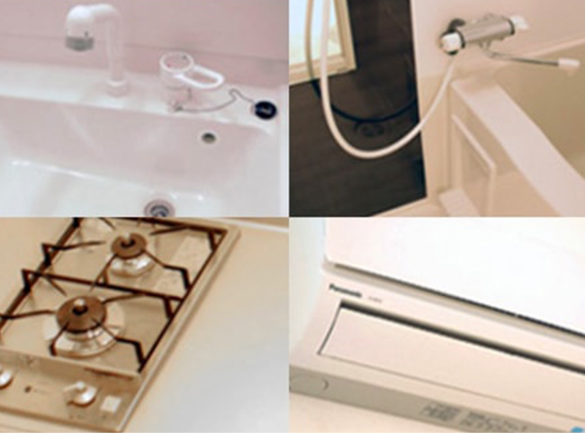
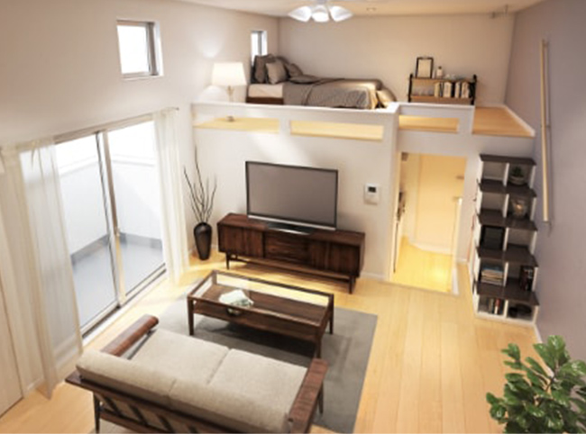
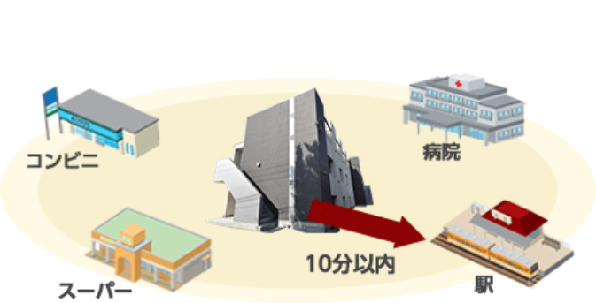

昨今発生したさまざまな要因によって経済的影響が出ており、投資を前向きに考えられないという投資家の方も
いらっしゃるのではないかと思います。しかし、金融機関の対応を見てもさほど大きな影響は出ておらず、
反対に今のような“不安定な時代“と言われるタイミングでも積極的に動く方がいらっしゃいます。このような時代においては、
どのように資産形成と向き合うべきなのでしょうか？ここでは「安定した不動産投資」をキーワードに、
不動産投資を取り巻く状況を冷静な視点でチェックしていきましょう。
「安定した投資」を
見極めるための３つの切り口
- 01.経済変動の影響を受けにくい投資対象とは？
-
02.投資用の居住用物件に対する賃貸需要は
今後も見込めるのか？ - 03.家賃が安定している物件とは？
-
01.
経済変動の影響を
受けにくい投資対象とは？住居用物件はインフラの一種であり家賃の減収が起こりづらく安定
J-REIT銘柄ランキングから
見えてくる「住居主体型」資産の優位性“不安定な時代”というキーワードが新聞やネットを賑わせている一方、一部のJ-REIT価格が下落したことで利回りが高まっており、逆に今は絶好の投資のチャンスではないか...と悩む方も増えています。不動産および不動産関連の投資についてはさまざまな見方がありますが、実際はどうでしょうか？まず現状を知るに当たり、物件ごとの状況を反映するJ-REITの値動きに着目してみましょう。下の図に「オフィス・商業施設」「宿泊施設」「高級物件」「ワンルーム」という種別ごとの状況をまとめました。
オフィス・商業施設 宿泊施設 住居 高級物件 ワンルーム 利用者 - ・中小企業
- ・テナント
- ・旅行者
- ・高所得の外国人
- ・経営者
- ・ファミリー
- ・サラリーマン
- ・OL
要因 - ・業績不振
- ・施設閉鎖
- ・旅行自粛
- ・インバウンド減少
- ・帰国/引越
- ・現金化目的の売り
居住継続 現状 - ・退去増加
- ・賃料下落
- ・稼働率の低下
- ・空室増加
- ・賃料下落
賃料変化なし 影響 REITなどの金融商品指数下落 物件価格下落 影響なし 注目すべきは、「要因」に挙げられているマイナス項目の数々と、それに対して「ワンルーム」は「居住継続」「賃料変化なし」となっていることです。
これを裏付けるのが、新型コロナウイルスの感染拡⼤による自粛期間前後におけるJ-REIT銘柄の価格動向です。オフィスや商業ビル、宿泊施設は下落傾向となっているほか、住居物件においても高級物件では支出の抑制を目的とした売却や現金化が進むことなどから、空室や賃料下落が発生しています。
J-REIT銘柄ランキング（下図）によると、宅配需要の増加により高騰している物流施設を除き、値上がりしているのは主に住居主体型の銘柄であることがわかります。
※価格騰落率＝(2020年6月23日時点の価格÷設立当初の価格)－1 にて算出
また、2020年3月末からの新型コロナウイルスの感染拡⼤に伴い、賃料支払いが困難なテナントに対し、賃料の減額や猶予に応じるなど柔軟な措置の実施を検討する様、国土交通省からの要請がありました。
仮にテナントから賃料の減額や猶予の申し出がなかった場合でも、テナントからの賃料収入を主な収入源としている物件は、経済活動の自粛が続いた場合、事業継続が困難な事業者の撤退（および後継テナントが決まらないことによる空室の長期化）などが起こり、大きく収益が減ることも想定されます。
⼀⽅、居住⽤物件は、入居者からすると家賃の支払優先度がきわめて高いことに加え、各企業に対し金融機関も実質無利子での融資を行うなど積極的な支援を行っており、大規模な倒産やリストラ等は生じていないことから、一部を除き、家賃収入（金額・入居者数ともに）への直接的な影響はそれほど大きくありません。また、この事態で転勤の先送りや引越に慎重になる方が増えることも考えると、入居期間が長期化するといったプラス効果も想定されます。種別 収益要素 現在の状況 影響 ホテル・
商業施設毎日の
売上営業自粛
業績不審空室増加・
テナント減少オフィス 法人の
業績空室増加または
賃料に影響あり賃貸住宅 個人の
所得引越減少
継続居住賃料に影響なし 
居住用物件に
狙いを定めることで、
安定した需要を獲得できますオフィスにおいては、リモートワークなどのフレキシブルな働き方の導入により、オフィス需要が頭打ちまたは縮小することも想定されます。また新型コロナウィルスの影響により、オフィスビルの管理方法が強化されていくことも見逃せません。
2020/5/15付の日本経済新聞の記事には「（新型コロナウィルスの影響で）働き⽅が⼤きく変化し、都⼼にオフィスを構える必要がなくなるのではないか。」という内容が掲載されています。近年は都心部を中心にオフィス需要は高まり続けてきましたが、現在は大きな潮目のタイミングを迎えていると言えます。
-
02.
投資物件に対する
賃貸需要は今後も見込めるのか？物件の「資産性」は、
それを欲する人のボリュームで決まる！東京の賃貸需要にどのような変化が訪れるのかを予測してみましょう。特にアパート賃貸となると単身世帯が対象になると予想されるため、その手がかりとして、東京都が実施する統計予測（下図）を参考に考えてみます。
左のグラフ「東京23区の単独世帯（一人暮らしの世帯）の世帯数」においては、世帯数が今後も増加し続ける見込みとなります。一方、夫婦や家族などの2人以上の世帯数は2025年をピークに減少に転じています。ここから都市部に一人暮らしをするスタイルは、今後もしばらくは底堅い需要があると推察されます。
東京都の世帯数グラフ
その裏付けとして、単身者世帯数の増加の背景を考えると、離婚率の増加、晩婚化、働き方の変化（契約社員、フリーター）等、都会に暮らすスタイルが単身者のスタイルを取りやすい傾向にあることが要因だと予想されます。
近年、働き方改革の浸透（さらにコロナショックの影響もあり）、一部の企業ではリモートワークを推奨するケースが増えています。これらを背景に、東京から地方へと移住するというトレンドもありますが、育児環境やライフスタイルの刷新という意図が強いことから、主にファミリー世帯で起こる現象と言えます。単身者においては、やはり通勤時間を短くしたいニーズも根強く、ほとんどの方が都市部に居住し続けることが予想されます。
都市部の一人暮らし層をターゲットとした物件(ex.ワンルーム物件)は今後も「安定した需要」が期待できます
-
03.
家賃が安定している
投資物件とは？ワンルーム物件は事業用物件にくらべ
賃料が安定している賃料の推移は下記の過去の賃料推移グラフから知ることができます。ここから見えることは、ワンルーム平均賃料（実線）の安定性と、一方でオフィス平均賃料（破線）の上下動の大きさです。
注目すべきは、経済に影響があるような大きな危機が起きたときの賃料への影響度です。2008年のリーマンショック、2011年の東⽇本⼤震災では、東京の都⼼部5区のオフィスは軒並み賃料の低下が起こり、アベノミクスでの持ち直しが始まる2013年には底値で約30％マイナスを記録しました。一方でワンルーム平均賃料はそのような状況でも大きく落ち込むことなく、緩やかに上昇をみせています。平均賃料指数グラフ
ワンルーム物件は、
突発的な危機においても
賃料への影響を受けづらい
- 賃貸需要の安定した
都市部の立地 - 賃料の増減が小さい
居住用不動産
投資期間中には、経済環境の変化が
起こることもあります。
シノケン
の
結論
不安定な時代であっても、
「ワンルームアパート投資」
は安定感があり強い！
不安定な時代にアパート経営を
オススメする３つの理由
都市部のワンルーム物件
-
01.
他の投資対象と比べると、
不安定な経済状況でも
大きな影響を受けづらい -
02.
単独世帯数（1人暮らし層）は
今後も増加が見込まれ、
ワンルーム需要は底堅い -
03.
アパートの賃料は景気に
大きく左右されない
「資産になる」アパートとは？
シノケンで培われた４つの
ノウハウをご覧ください！
シノケンの培ってきた経験から
弊社で扱うアパートは
すべて以下の条件を
満たしたものにしています。
-

01.
デザイナーズアパート
シノケンのデザイナーズアパートは、土地の形状や条件に合わせ、１棟ずつデザイナーがオリジナルのプランニング・設計をしています。敷地条件を加味した上で意匠についても検討し、そのオリジナリティとデザイン性は安定した入居率を実現しています。
-

02.
充実の設備
グレードの高い設備（サーモ水栓・温水洗浄便器・シャンプードレッサー付洗面化粧台等）を揃え、気になる床の防音対策も十分に施しています。入居者の暮らしやすさに自信を持ってご案内することができます。
-

03.
人気の間取り（ロフト・スキップフロア）
入居者に根強い人気の「ロフト」が特徴的なシノケンのアパート。創業以来研究を重ね、従来のロフトの概念を大きく覆しています。それは、内覧にお越しいただいた方への強い印象をあたえ、入居申し込みの大きな理由の一つとなっております。
-

04.
駅近（駅徒歩10分の立地）
全国主要都市において、市場診断を行い、入居ニーズの高いエリアに絞って展開エリアを策定し、地元や大手の不動産会社と連携。市場に出ない良質な物件を入手し、収益物件用地として提供し続けています。
年間8,000名以上の入居希望者様から
お申し込みを頂く人気商品をご提供。
4,000店舗以上の仲介業者様と連携し
高い入居率を維持しています。
アパート経営の収入源に
最も重要な入居率が、
創業以来30年を経過しても
※2019年年間平均/自社企画開発物件
※2018年年間では97.7%
日本全国、多くのお客様がシノケンで
資産づくりをはじめています。
創業30年の中で、6,000名を超えるオーナー様に
ご契約頂いています。
ご契約いただいている方は99％が会社員、公務員の方で、年齢は40代以下の方が約85%を超えます。
老後の年金だけでは不安というお客様が多く、
シノケンはそんな方を全力でサポートしています。
-
33歳 大手通信系企業勤務
内藤さん（仮名）サラリーマンにもアパート経営はできます。
シノケンなら始めやすい。
他の会社で必要となる資金規模とは
比べ物にならない。少額でも心配ありません。思ってるほどアパート経営のハードルは高くないと思います。僕みたいな歳のサラリーマンでも、ある程度蓄えがあれば始められますね。実は妻には最初は内緒でした。普段の生活ではなにかと苦労をかけていて、それを最終的には楽にさせたいという想いはあるんですけど。不動産投資の話をする時も緊張しましたね。結果、不動産投資は長い目で見て安心できるといいますか、生活の中に安心感ができましたね。
何かあっても自分には「会社のお金」と「自分の保険のお金」と、さらに「不動産投資で得る家賃収入」と「土地という資産」があるので。自分や家族に何があっても安心して生活できる。今後は、東京のアパートはゆくゆくは完済したあと老後の資金になるか、もしくは子供が家族を持ったらそこに家を建ててもらうとか。もう一軒建てれれば、そこには自分が住みたいなと思っています。何十年も先の話ですが、立地が良いのでいろいろ考えられるのがいいですね。 -
34歳 金融機関勤務
北村さん（仮名）資産として将来の不安を和らげてくれることに
感謝しています。
一番良い「場所」を提案してくれたシノケンを信頼してアパート経営を始めました。会社選びで重要視した点は、その企業の責任範囲がどれくらいあるかでした。例えば、過去に大きな事故というか、姉歯さん事件があった時にどんな対処をしていたのかを調べたときに、シノケンさんは非常に信用に足る企業だなと感じて。よほど何か大きなトラブル・ミスがあったとしても貢任をもって面倒見ていただけるなと強く感じました。
マンション投資も検討したのですが、よくある区分（マンション投資）で、「将来の年金代わり」とか「節税対策」とか色々謳い文句があるんですけど、それだけでは魅力を感じなかったんです。僕の場合、副収入を得ることが目的なので区分マンションのように規模が小さければ、当然収入の規模も小さいので、そこはアパート一棟でとなりました。
今後の目標については、自分と同じくらい給料を稼ぐ物件があれば、人生を選べるなと。「働くか・働かないか。」そこまではやろうと思って。今は途中過程です。人生せっかくであれば、金融資産 1億円以上にはなってみたいなと思っています。だから、金融資産を作る意味では、間違いなく不動産投資が一番安定性はあると個人的には思います。
-
無料のノウハウBOOKをプレゼント！
アパート経営の仕組みがわかる
「ノウハウBook」
シノケンのサービスを掲載した
「パンフレット」2冊セットをプレゼント中！
さらに今なら！
アパート経営ムービー ＋ マンガもプレゼント中 -
無料のセミナー（オンライン）
に参加できます！初心者から経験者まで。
現場を知る不動産投資コンサルタントの本音が知れる「不動産投資セミナー」を実施中！
-
セミナー講師による
プライベート相談を実施します！95%の人が
「なんでも聞けた」「満足した」と好評！セミナー講師により
不動産投資プライベート
相談会を全国各地で実施中！ -
不動産投資セミナーや無料相談会で
弊社にお越しの際は
SHOW ROOM
シノケンインテリジェントアパートを
直接ご体験いただけます。
東京のモデルルームを新たにリニューアルしました。
IoTデバイス「Shinoken Smart Kit」を体験いただくことが可能です。IoT導入により、セキュリティ強化、利便性の向上等、入居者様により安心で快適な空間の提供が実現しております。是非、シノケンのアパートのクオリティを直接体感してみてください。